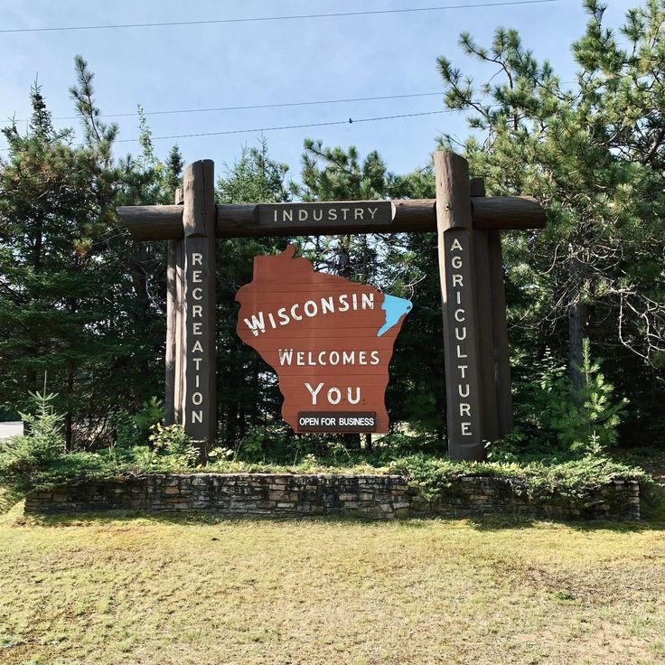

Tiana Longjam
Data Science & Mathematics
University of Wisconsin–Madison | Class of 2027
Data Science & Mathematics
University of Wisconsin–Madison | Class of 2027
I’m Tiana, a Data Science and Mathematics student at UW–Madison. My interests lie in machine learning, data analysis, and developing tools that make sense of complex real-world datasets.
I enjoy working at the intersection of machine learning, mathematics, and real-world impact, ranging from neural PDE solvers to full-stack AI applications.
I also enjoy using machine learning and data analysis to explore complex real-world datasets and utilise my skills to better understand the world and apply them in different ways.
One of my favourite Sustainable Development Goals is to Reduce Inequalities in the world, I want to achieve this through my own accomplishments and efforts.
Madison, WI
Neo4j
Python
Whisper
CNN
Twilio
RL

GCP
BigQuery
Dataform
GCS
SQL
Spark
Hive
PySpark MLlib
Gemini API
Python
Docker
HDFS
SQL
gRPC
PyArrow
gRPC
Docker
LRU Cache
Protobuf

Cassandra
gRPC
Spark
Docker
React
FastAPI
Flask
React
Vite
Express
Supabase
Google Maps API

Python
Exa AI API
HuggingFace
Python
GeoPandas
SQLite
Scikit-learn
Python
OOP
Binary Search Trees
Matplotlib
Python
Pandas
NumPy
Visualization
Data Wrangling
Python
Pandas
Seaborn
Matplotlib
.jpeg)
Python
Machine Learning
Scikit-learn
Matplotlib
Data Visualization
Seaborn
XGBoost
Pandas
NumPy


Comp Sci 540
Data Science MajorMachine Learning
Knowledge-based search techniques
Automatic deduction
Predicate logic
Probabilistic reasoning
Problem solving
Data mining
Natural language understanding
Computer Vision
Speech recognition
Robotics
MATH 541
Mathematics MajorGroups
Normal subgroups
Cayley's theorem
Rings
Ideals
Homomorphisms
Polynomial Rings
Abstract Vector Spaces
Finance 300
Business MinorCorporate finance and investments
Financial Environment
Securities Markets
Financial Markets
Financial Statements and Analysis
Working Capital Management
Capital Budgeting
Cost of Capital
Dividend Policy
Asset Valuation
Investments
Decision-making under Uncertainty
Mergers
Options